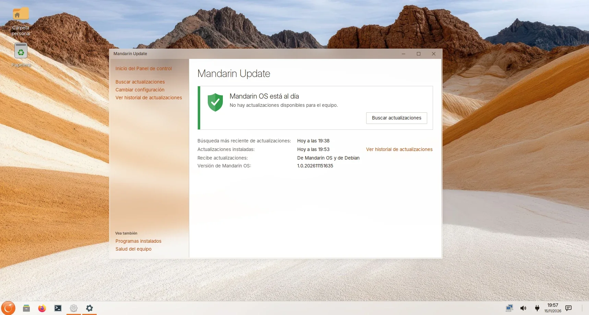
Mandarin Update
Busca e instala las actualizaciones del sistema con un par de clics, y te avisa cuando hay novedades.
Mandarin OS 1.0
Un sistema operativo gratuito, claro y luminoso. Se maneja como el escritorio que ya conoces y da una segunda vida a ese portátil que parecía demasiado lento.
Gratis · Basado en Debian 13 · Desde 2 GB de memoria
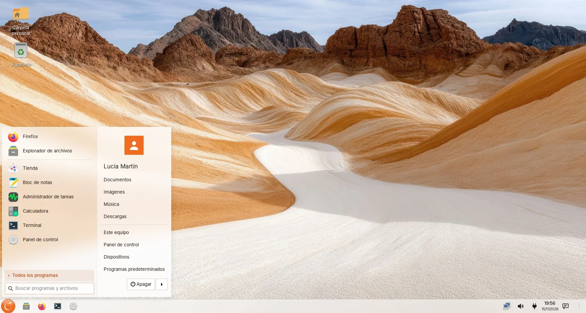
Botón de inicio, barra de tareas, explorador y panel de control donde esperas encontrarlos.
Funciona con 2 GB de memoria y gráficas antiguas. En equipos modernos, con todos los efectos.
Actualizaciones firmadas de Debian y de Mandarin, con avisos claros y sin escribir órdenes.
Haz doble clic en un archivo .exe y Mandarin se encarga de abrirlo.
Escritorio
El menú de inicio de dos columnas reúne tus programas, tus carpetas y el apagado en un solo sitio. La barra de tareas agrupa las ventanas abiertas y el reloj está donde siempre.
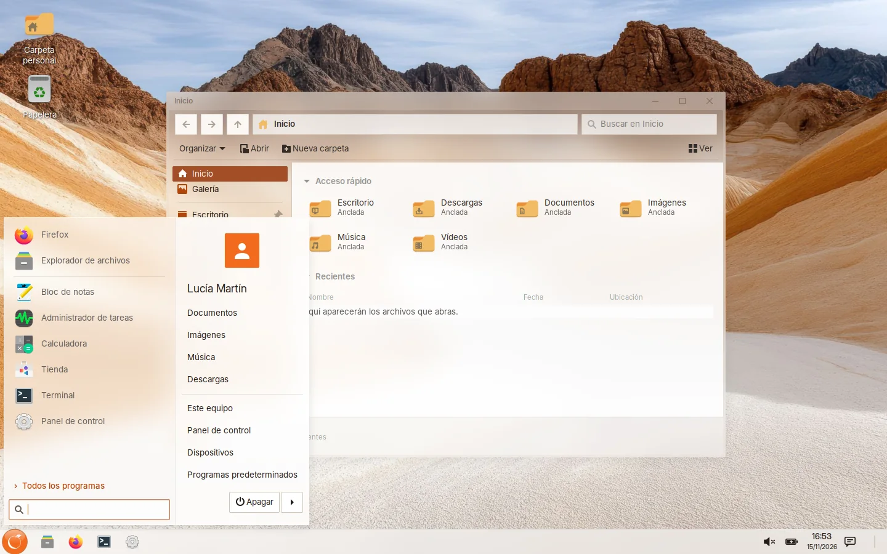
Explorador de archivos
Un explorador hecho para Mandarin, con acceso rápido a tus carpetas, archivos recientes y todas tus unidades a la vista.
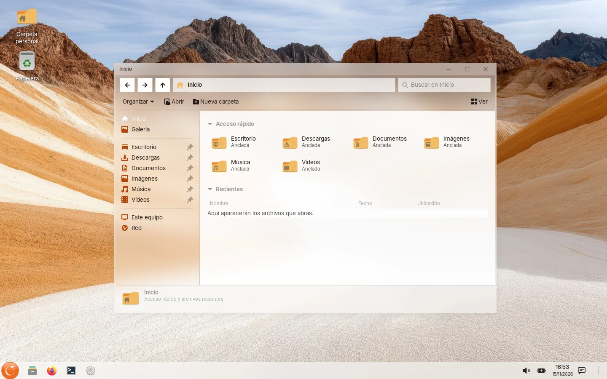
Aplicaciones de Mandarin
Mandarin trae sus propias aplicaciones para el día a día del equipo, todas con el mismo estilo y en español.

Busca e instala las actualizaciones del sistema con un par de clics, y te avisa cuando hay novedades.
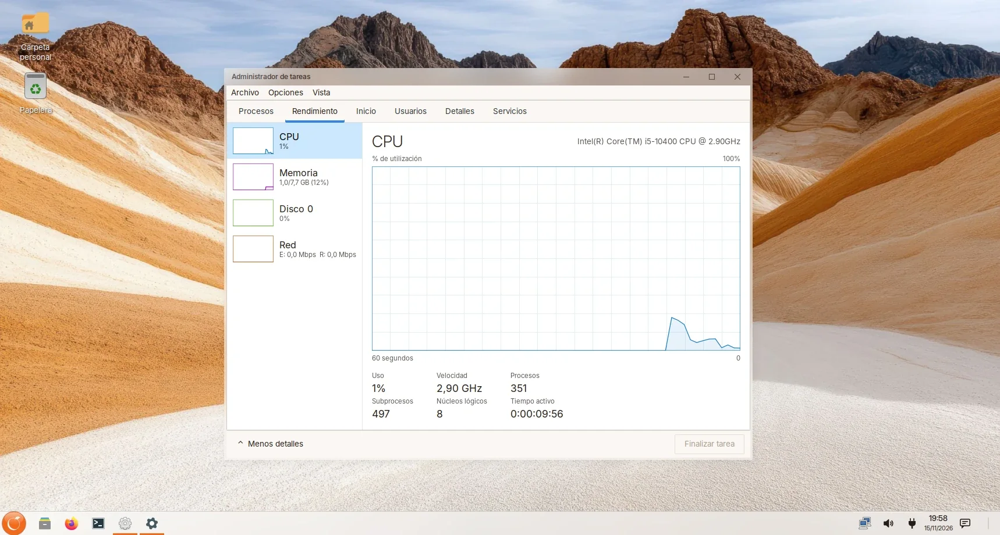
Procesos, rendimiento, programas de inicio y servicios. Cierra lo que se haya quedado colgado.
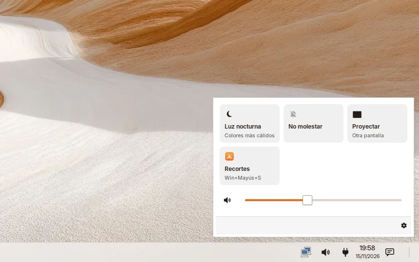
Wi-Fi, modo avión, luz nocturna, no molestar, brillo y volumen, a un clic desde la barra.
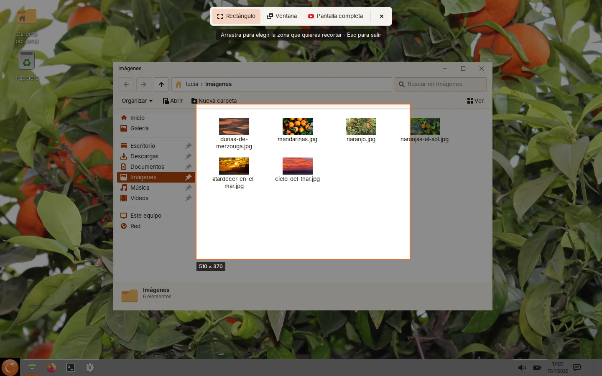
Congela la pantalla para que nada se mueva mientras eliges. Después, anota y copia.
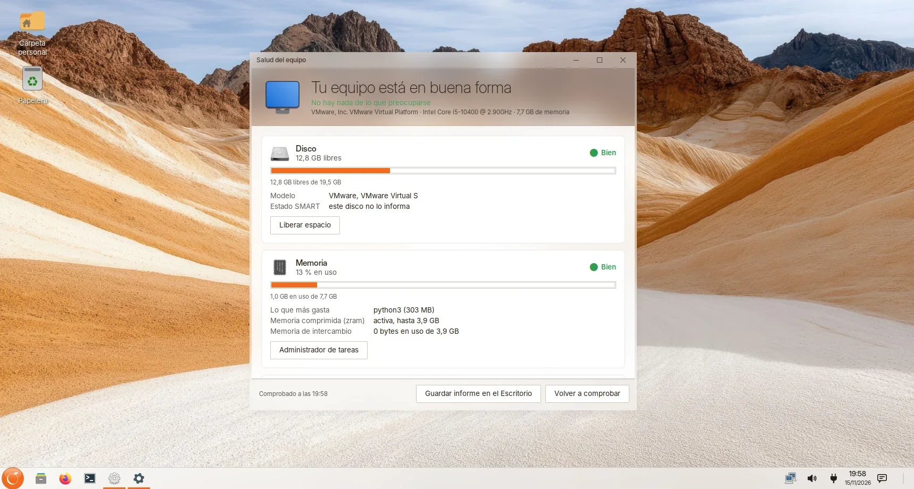
Revisa el disco, la batería, la temperatura y la red, y te explica en palabras sencillas qué hacer.
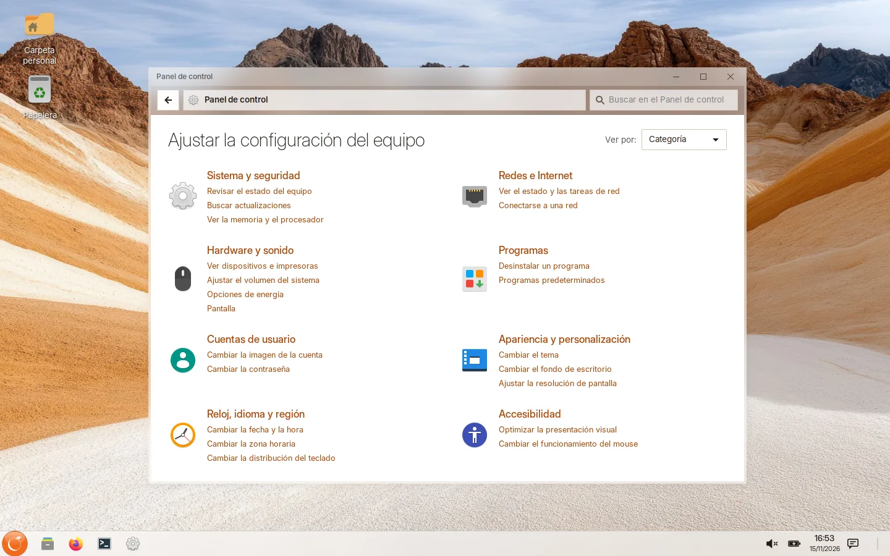
Toda la configuración ordenada por categorías: sistema, redes, programas, apariencia y más.
Claro u oscuro
Cambia entre el tema claro y el oscuro desde el Panel de control. Todas las aplicaciones de Mandarin se adaptan, y la luz nocturna cuida tus ojos por la noche.
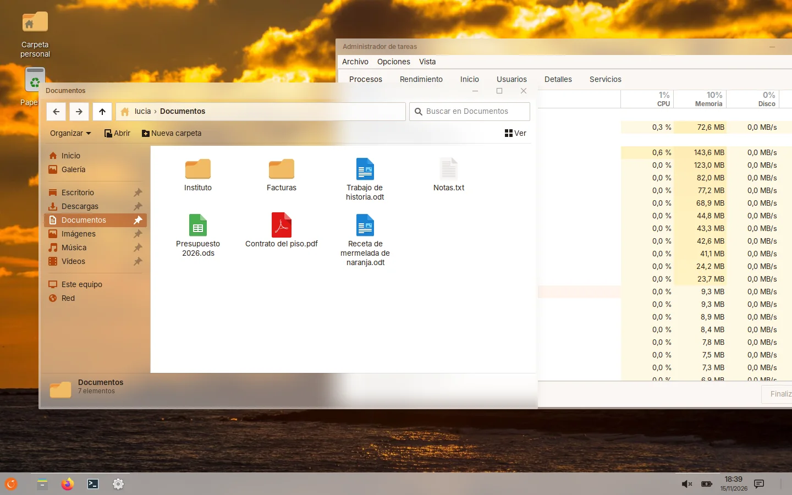
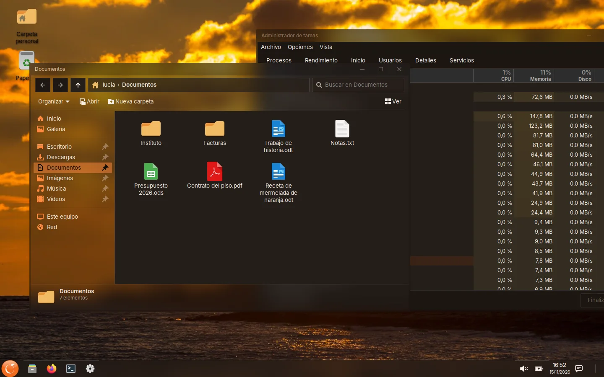
ClaroOscuro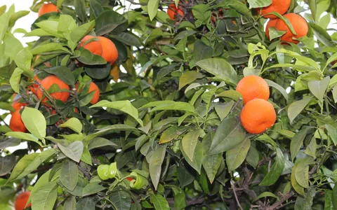
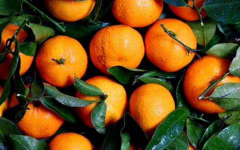
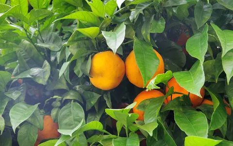
Incluye nueve fondos de escritorio. Fotos de Wikimedia Commons con licencia libre: ver autores y licencias.
Requisitos
Mandarin está pensado para portátiles de hace quince años con 2 GB de memoria, y en un convertible táctil actual va igual de bien. Al arrancar mira qué gráfica tienes y activa solo lo que tu equipo puede mover con soltura.
Mínimo
Recomendado
Cristal esmerilado en vivo en la barra, el menú y las ventanas, con sombras y transiciones suaves. Se activa solo en equipos con una gráfica moderna.
Para gráficas antiguas: el mismo aspecto con un cristal «pintado» que no gasta recursos. Puedes cambiar de modo cuando quieras en el Panel de control.
Programas de Windows
Muchos programas y juegos de Windows funcionan en Mandarin sin preparar nada: el sistema reconoce el archivo y lo abre con Wine. Si un programa se instala, aparece en el menú de inicio como cualquier otro.
Descargar
Mandarin arranca desde un USB para que lo pruebes tal cual. Si te gusta, el asistente lo instala en unos minutos.
Un único archivo ISO para cualquier ordenador de 64 bits, nuevo o antiguo.
Con balenaEtcher, Rufus o Ventoy, en un USB de 4 GB o más. Se borrará lo que contenga.
Enciende el equipo desde el USB, prueba Mandarin y pulsa Instalar Mandarin OS en el escritorio.
La imagen para descargar se publicará aquí muy pronto. Los equipos con Mandarin ya reciben todas las novedades por Mandarin Update.
Actualizaciones
Esta web es también el servidor de actualizaciones de Mandarin. Los equipos instalados las reciben solos en Mandarin Update, junto con las de Debian.
¿Instalaste Mandarin con una imagen de antes de que existieran las actualizaciones? Se activan una sola vez abriendo el Terminal y escribiendo:
wget -qO- https://dacotin2.github.io/mandarin-os/instalar.sh | sudo sh